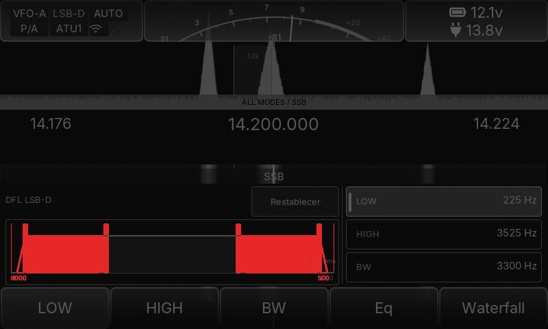
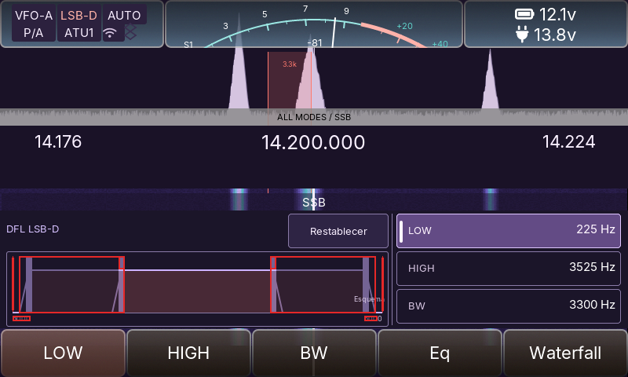

PASS exit 0
a3ff5e9023a40ea68b1e507f32c1f4855dc34eddb35392e2a1a1ea8aeb7dc587e64f070d58a6fd59x6200-uiharness| Gate | Required | Status | Summary |
|---|---|---|---|
| Functional | yes | PASS | 142 scenarios captured on both revisions |
| Visual Regression | yes | PASS | no unexplained visual regressions |
| Quality Contract | yes | PASS | 1480 contract checks passed on the candidate |
| Performance | yes | PASS | render-cost proxy within budget |
| Hardware | advisory | BLOCKED | no physical X6200 attached; hardware behaviour is not measured |
| Energy | advisory | BLOCKED | no power measurement; energy evidence must be physical |
Every scenario is within the fixed budgets.
| Scenario | Changed px | Area | Regions |
|---|---|---|---|
| app-bands | 0 | 0.000% | — |
| app-close-home | 0 | 0.000% | — |
| apps-menu-1 | 0 | 0.000% | — |
| apps-menu-2 | 0 | 0.000% | — |
| apps-menu-3 | 0 | 0.000% | — |
| apps-menu-4 | 0 | 0.000% | — |
| apps-menu-5 | 0 | 0.000% | — |
| apps-menu-6 | 0 | 0.000% | — |
| autotune | 0 | 0.000% | — |
| autotune-found | 0 | 0.000% | — |
| autotune-progress | 0 | 0.000% | — |
| bench-render | 0 | 0.000% | — |
| bt-dialog | 0 | 0.000% | — |
| bt-dialog-tema-aurora | 0 | 0.000% | — |
| bt-dialog-tema-cathode | 0 | 0.000% | — |
| bt-dialog-tema-redshift | 0 | 0.000% | — |
| bt-dialog-tema-sprint | 0 | 0.000% | — |
| bt-dialog-tema-sunlit | 0 | 0.000% | — |
| bt-dialog-tema-trail | 0 | 0.000% | — |
| cw-autotune-off | 0 | 0.000% | — |
| cw-autotune-on | 0 | 0.000% | — |
| cw-tune-default | 0 | 0.000% | — |
| cw-tune-ssb | 0 | 0.000% | — |
| cw-tune-tema-sunlit | 0 | 0.000% | — |
| cw-tune-tuner | 0 | 0.000% | — |
| dfl-editor-cycles | 0 | 0.000% | — |
| dfl-editor-interaction | 0 | 0.000% | — |
| dfl-editor-lsb-d | 15140 | 3.943% | waterfall, ajustes_dialogo, dfl_inline |
| dfl-editor-reset | 0 | 0.000% | — |
| dfl-editor-rotary0 | 0 | 0.000% | — |
| dfl-editor-sel-bw-tema-aurora | 0 | 0.000% | — |
| dfl-editor-sel-bw-tema-cathode | 0 | 0.000% | — |
| dfl-editor-sel-bw-tema-redshift | 0 | 0.000% | — |
| dfl-editor-sel-bw-tema-sprint | 0 | 0.000% | — |
| dfl-editor-sel-bw-tema-sunlit | 0 | 0.000% | — |
| dfl-editor-sel-bw-tema-trail | 0 | 0.000% | — |
| dfl-editor-sel-high-tema-aurora | 0 | 0.000% | — |
| dfl-editor-sel-high-tema-cathode | 0 | 0.000% | — |
| dfl-editor-sel-high-tema-redshift | 0 | 0.000% | — |
| dfl-editor-sel-high-tema-sprint | 0 | 0.000% | — |
| dfl-editor-sel-high-tema-sunlit | 0 | 0.000% | — |
| dfl-editor-sel-high-tema-trail | 0 | 0.000% | — |
| dfl-editor-tx | 0 | 0.000% | — |
| dfl-editor-usb-d | 0 | 0.000% | — |
| dfl-editor-usb-d-tema-aurora | 0 | 0.000% | — |
| dfl-editor-usb-d-tema-cathode | 0 | 0.000% | — |
| dfl-editor-usb-d-tema-redshift | 0 | 0.000% | — |
| dfl-editor-usb-d-tema-sprint | 0 | 0.000% | — |
| dfl-editor-usb-d-tema-sunlit | 0 | 0.000% | — |
| dfl-editor-usb-d-tema-trail | 0 | 0.000% | — |
| dfl-lsb-d | 0 | 0.000% | — |
| dfl-page-tema-aurora | 0 | 0.000% | — |
| dfl-page-tema-cathode | 0 | 0.000% | — |
| dfl-page-tema-redshift | 0 | 0.000% | — |
| dfl-page-tema-sprint | 0 | 0.000% | — |
| dfl-page-tema-sunlit | 0 | 0.000% | — |
| dfl-page-tema-trail | 0 | 0.000% | — |
| dfl-usb-d | 0 | 0.000% | — |
| dfl-usb-d-span100k | 0 | 0.000% | — |
| dfl-usb-d-span50k | 0 | 0.000% | — |
| dfl-usb-d-tema-cathode | 0 | 0.000% | — |
| dfl-usb-d-tema-redshift | 0 | 0.000% | — |
| dfl-usb-d-tema-sprint | 0 | 0.000% | — |
| dfl-usb-d-tema-sunlit | 0 | 0.000% | — |
| dfl-usb-d-tema-trail | 0 | 0.000% | — |
| home-bateria-externa | 0 | 0.000% | — |
| home-cb | 0 | 0.000% | — |
| home-cb-a | 0 | 0.000% | — |
| home-cb-cathode | 0 | 0.000% | — |
| home-cb-d | 0 | 0.000% | — |
| home-cb-offchannel | 0 | 0.000% | — |
| home-frecuencia-extrema | 0 | 0.000% | — |
| home-usb-20m | 0 | 0.000% | — |
| main-bateria-baja | 0 | 0.000% | — |
| main-espectro-agua | 0 | 0.000% | — |
| main-foco | 0 | 0.000% | — |
| main-frecuencia-dseg | 0 | 0.000% | — |
| main-natural | 0 | 0.000% | — |
| main-natural-eco | 0 | 0.000% | — |
| main-tema-aurora | 0 | 0.000% | — |
| main-tema-aurora-agua | 0 | 0.000% | — |
| main-tema-aurora-eco | 0 | 0.000% | — |
| main-tema-aurora-tx | 0 | 0.000% | — |
| main-tema-cathode | 0 | 0.000% | — |
| main-tema-cathode-agua | 0 | 0.000% | — |
| main-tema-cathode-eco | 0 | 0.000% | — |
| main-tema-cathode-tx | 0 | 0.000% | — |
| main-tema-redshift | 0 | 0.000% | — |
| main-tema-redshift-agua | 0 | 0.000% | — |
| main-tema-redshift-eco | 0 | 0.000% | — |
| main-tema-redshift-tx | 0 | 0.000% | — |
| main-tema-sprint | 0 | 0.000% | — |
| main-tema-sprint-agua | 0 | 0.000% | — |
| main-tema-sprint-eco | 0 | 0.000% | — |
| main-tema-sprint-tx | 0 | 0.000% | — |
| main-tema-sunlit | 0 | 0.000% | — |
| main-tema-sunlit-agua | 0 | 0.000% | — |
| main-tema-sunlit-eco | 0 | 0.000% | — |
| main-tema-sunlit-tx | 0 | 0.000% | — |
| main-tema-trail | 0 | 0.000% | — |
| main-tema-trail-agua | 0 | 0.000% | — |
| main-tema-trail-eco | 0 | 0.000% | — |
| main-tema-trail-tx | 0 | 0.000% | — |
| main-tx-simulado | 0 | 0.000% | — |
| settings-audio | 0 | 0.000% | — |
| settings-bands | 0 | 0.000% | — |
| settings-grupo-actions | 0 | 0.000% | — |
| settings-grupo-display | 0 | 0.000% | — |
| settings-grupo-info | 0 | 0.000% | — |
| settings-grupo-operation | 0 | 0.000% | — |
| settings-grupo-operation-tema-aurora | 0 | 0.000% | — |
| settings-grupo-operation-tema-cathode | 0 | 0.000% | — |
| settings-grupo-operation-tema-redshift | 0 | 0.000% | — |
| settings-grupo-operation-tema-sprint | 0 | 0.000% | — |
| settings-grupo-operation-tema-sunlit | 0 | 0.000% | — |
| settings-grupo-operation-tema-trail | 0 | 0.000% | — |
| settings-home | 0 | 0.000% | — |
| settings-perfil | 0 | 0.000% | — |
| settings-tema-aurora | 0 | 0.000% | — |
| settings-tema-cathode | 0 | 0.000% | — |
| settings-tema-redshift | 0 | 0.000% | — |
| settings-tema-sprint | 0 | 0.000% | — |
| settings-tema-sunlit | 0 | 0.000% | — |
| settings-tema-trail | 0 | 0.000% | — |
| settings-wfbat | 0 | 0.000% | — |
| swrscan-3pass | 0 | 0.000% | — |
| swrscan-3pass-p1 | 0 | 0.000% | — |
| swrscan-3pass-p2 | 0 | 0.000% | — |
| swrscan-3pass-p3 | 0 | 0.000% | — |
| swrscan-3pass-stop | 0 | 0.000% | — |
| swrscan-3pass-tema-aurora | 0 | 0.000% | — |
| swrscan-3pass-tema-cathode | 0 | 0.000% | — |
| swrscan-5pass-moving | 0 | 0.000% | — |
| swrscan-5pass-outliers | 0 | 0.000% | — |
| swrscan-double-valley | 0 | 0.000% | — |
| swrscan-flat | 0 | 0.000% | — |
| swrscan-narrow-zoom | 0 | 0.000% | — |
| swrscan-owner-40m | 0 | 0.000% | — |
| swrscan-owner-40m-domo | 0 | 0.000% | — |
| swrscan-owner-40m-sweep | 0 | 0.000% | — |
| swrscan-quick | 0 | 0.000% | — |
| swrscan-wide-zoom | 0 | 0.000% | — |


| Scenario | REAL | PARTIAL | SYNTHETIC | UNSUPPORTED |
|---|---|---|---|---|
| app-bands | 16 | 5 | 3 | 5 |
| app-close-home | 17 | 5 | 4 | 3 |
| apps-menu-1 | 16 | 5 | 3 | 3 |
| apps-menu-2 | 16 | 5 | 3 | 3 |
| apps-menu-3 | 16 | 5 | 3 | 3 |
| apps-menu-4 | 16 | 5 | 3 | 3 |
| apps-menu-5 | 16 | 5 | 3 | 3 |
| apps-menu-6 | 16 | 5 | 3 | 3 |
| autotune | 18 | 5 | 3 | 5 |
| autotune-found | 18 | 5 | 3 | 5 |
| autotune-progress | 18 | 5 | 3 | 5 |
| bench-render | 15 | 4 | 3 | 3 |
| bt-dialog | 19 | 4 | 4 | 4 |
| bt-dialog-tema-aurora | 19 | 4 | 4 | 4 |
| bt-dialog-tema-cathode | 19 | 4 | 4 | 4 |
| bt-dialog-tema-redshift | 19 | 4 | 4 | 4 |
| bt-dialog-tema-sprint | 19 | 4 | 4 | 4 |
| bt-dialog-tema-sunlit | 19 | 4 | 4 | 4 |
| bt-dialog-tema-trail | 19 | 4 | 4 | 4 |
| cw-autotune-off | 16 | 5 | 4 | 4 |
| cw-autotune-on | 16 | 5 | 4 | 4 |
| cw-tune-default | 17 | 5 | 3 | 4 |
| cw-tune-ssb | 17 | 5 | 3 | 4 |
| cw-tune-tema-sunlit | 17 | 5 | 3 | 4 |
| cw-tune-tuner | 17 | 5 | 3 | 4 |
| dfl-editor-cycles | 15 | 4 | 3 | 3 |
| dfl-editor-interaction | 15 | 4 | 3 | 3 |
| dfl-editor-lsb-d | 15 | 4 | 3 | 3 |
| dfl-editor-reset | 15 | 4 | 3 | 3 |
| dfl-editor-rotary0 | 15 | 4 | 3 | 3 |
| dfl-editor-sel-bw-tema-aurora | 15 | 4 | 3 | 3 |
| dfl-editor-sel-bw-tema-cathode | 15 | 4 | 3 | 3 |
| dfl-editor-sel-bw-tema-redshift | 15 | 4 | 3 | 3 |
| dfl-editor-sel-bw-tema-sprint | 15 | 4 | 3 | 3 |
| dfl-editor-sel-bw-tema-sunlit | 15 | 4 | 3 | 3 |
| dfl-editor-sel-bw-tema-trail | 15 | 4 | 3 | 3 |
| dfl-editor-sel-high-tema-aurora | 15 | 4 | 3 | 3 |
| dfl-editor-sel-high-tema-cathode | 15 | 4 | 3 | 3 |
| dfl-editor-sel-high-tema-redshift | 15 | 4 | 3 | 3 |
| dfl-editor-sel-high-tema-sprint | 15 | 4 | 3 | 3 |
| dfl-editor-sel-high-tema-sunlit | 15 | 4 | 3 | 3 |
| dfl-editor-sel-high-tema-trail | 15 | 4 | 3 | 3 |
| dfl-editor-tx | 15 | 4 | 3 | 3 |
| dfl-editor-usb-d | 15 | 4 | 3 | 3 |
| dfl-editor-usb-d-tema-aurora | 15 | 4 | 3 | 3 |
| dfl-editor-usb-d-tema-cathode | 15 | 4 | 3 | 3 |
| dfl-editor-usb-d-tema-redshift | 15 | 4 | 3 | 3 |
| dfl-editor-usb-d-tema-sprint | 15 | 4 | 3 | 3 |
| dfl-editor-usb-d-tema-sunlit | 15 | 4 | 3 | 3 |
| dfl-editor-usb-d-tema-trail | 15 | 4 | 3 | 3 |
| dfl-lsb-d | 15 | 4 | 3 | 3 |
| dfl-page-tema-aurora | 15 | 4 | 3 | 3 |
| dfl-page-tema-cathode | 15 | 4 | 3 | 3 |
| dfl-page-tema-redshift | 15 | 4 | 3 | 3 |
| dfl-page-tema-sprint | 15 | 4 | 3 | 3 |
| dfl-page-tema-sunlit | 15 | 4 | 3 | 3 |
| dfl-page-tema-trail | 15 | 4 | 3 | 3 |
| dfl-usb-d | 15 | 4 | 3 | 3 |
| dfl-usb-d-span100k | 15 | 4 | 3 | 3 |
| dfl-usb-d-span50k | 15 | 4 | 3 | 3 |
| dfl-usb-d-tema-cathode | 15 | 4 | 3 | 3 |
| dfl-usb-d-tema-redshift | 15 | 4 | 3 | 3 |
| dfl-usb-d-tema-sprint | 15 | 4 | 3 | 3 |
| dfl-usb-d-tema-sunlit | 15 | 4 | 3 | 3 |
| dfl-usb-d-tema-trail | 15 | 4 | 3 | 3 |
| home-bateria-externa | 15 | 4 | 3 | 3 |
| home-cb | 15 | 4 | 3 | 3 |
| home-cb-a | 15 | 4 | 3 | 3 |
| home-cb-cathode | 15 | 4 | 3 | 3 |
| home-cb-d | 15 | 4 | 3 | 3 |
| home-cb-offchannel | 15 | 4 | 3 | 3 |
| home-frecuencia-extrema | 15 | 4 | 3 | 3 |
| home-usb-20m | 15 | 4 | 3 | 3 |
| main-bateria-baja | 15 | 4 | 3 | 3 |
| main-espectro-agua | 15 | 4 | 3 | 3 |
| main-foco | 15 | 4 | 3 | 3 |
| main-frecuencia-dseg | 15 | 4 | 3 | 3 |
| main-natural | 15 | 4 | 3 | 3 |
| main-natural-eco | 15 | 4 | 3 | 3 |
| main-tema-aurora | 15 | 4 | 3 | 3 |
| main-tema-aurora-agua | 15 | 4 | 3 | 3 |
| main-tema-aurora-eco | 15 | 4 | 3 | 3 |
| main-tema-aurora-tx | 15 | 4 | 3 | 3 |
| main-tema-cathode | 15 | 4 | 3 | 3 |
| main-tema-cathode-agua | 15 | 4 | 3 | 3 |
| main-tema-cathode-eco | 15 | 4 | 3 | 3 |
| main-tema-cathode-tx | 15 | 4 | 3 | 3 |
| main-tema-redshift | 15 | 4 | 3 | 3 |
| main-tema-redshift-agua | 15 | 4 | 3 | 3 |
| main-tema-redshift-eco | 15 | 4 | 3 | 3 |
| main-tema-redshift-tx | 15 | 4 | 3 | 3 |
| main-tema-sprint | 15 | 4 | 3 | 3 |
| main-tema-sprint-agua | 15 | 4 | 3 | 3 |
| main-tema-sprint-eco | 15 | 4 | 3 | 3 |
| main-tema-sprint-tx | 15 | 4 | 3 | 3 |
| main-tema-sunlit | 15 | 4 | 3 | 3 |
| main-tema-sunlit-agua | 15 | 4 | 3 | 3 |
| main-tema-sunlit-eco | 15 | 4 | 3 | 3 |
| main-tema-sunlit-tx | 15 | 4 | 3 | 3 |
| main-tema-trail | 15 | 4 | 3 | 3 |
| main-tema-trail-agua | 15 | 4 | 3 | 3 |
| main-tema-trail-eco | 15 | 4 | 3 | 3 |
| main-tema-trail-tx | 15 | 4 | 3 | 3 |
| main-tx-simulado | 15 | 4 | 3 | 3 |
| settings-audio | 17 | 4 | 10 | 4 |
| settings-bands | 17 | 5 | 3 | 5 |
| settings-grupo-actions | 15 | 4 | 3 | 3 |
| settings-grupo-display | 15 | 4 | 3 | 3 |
| settings-grupo-info | 15 | 4 | 3 | 3 |
| settings-grupo-operation | 15 | 4 | 3 | 3 |
| settings-grupo-operation-tema-aurora | 15 | 4 | 3 | 3 |
| settings-grupo-operation-tema-cathode | 15 | 4 | 3 | 3 |
| settings-grupo-operation-tema-redshift | 15 | 4 | 3 | 3 |
| settings-grupo-operation-tema-sprint | 15 | 4 | 3 | 3 |
| settings-grupo-operation-tema-sunlit | 15 | 4 | 3 | 3 |
| settings-grupo-operation-tema-trail | 15 | 4 | 3 | 3 |
| settings-home | 17 | 4 | 10 | 4 |
| settings-perfil | 17 | 4 | 10 | 4 |
| settings-tema-aurora | 17 | 4 | 10 | 4 |
| settings-tema-cathode | 17 | 4 | 10 | 4 |
| settings-tema-redshift | 17 | 4 | 10 | 4 |
| settings-tema-sprint | 17 | 4 | 10 | 4 |
| settings-tema-sunlit | 17 | 4 | 10 | 4 |
| settings-tema-trail | 17 | 4 | 10 | 4 |
| settings-wfbat | 17 | 4 | 10 | 4 |
| swrscan-3pass | 18 | 7 | 6 | 4 |
| swrscan-3pass-p1 | 18 | 7 | 6 | 4 |
| swrscan-3pass-p2 | 18 | 7 | 6 | 4 |
| swrscan-3pass-p3 | 18 | 7 | 6 | 4 |
| swrscan-3pass-stop | 18 | 7 | 6 | 4 |
| swrscan-3pass-tema-aurora | 18 | 7 | 6 | 4 |
| swrscan-3pass-tema-cathode | 18 | 7 | 6 | 4 |
| swrscan-5pass-moving | 18 | 7 | 6 | 4 |
| swrscan-5pass-outliers | 18 | 7 | 6 | 4 |
| swrscan-double-valley | 18 | 7 | 6 | 4 |
| swrscan-flat | 18 | 7 | 6 | 4 |
| swrscan-narrow-zoom | 18 | 7 | 6 | 4 |
| swrscan-owner-40m | 18 | 7 | 6 | 4 |
| swrscan-owner-40m-domo | 18 | 7 | 6 | 4 |
| swrscan-owner-40m-sweep | 18 | 7 | 6 | 4 |
| swrscan-quick | 18 | 7 | 6 | 4 |
| swrscan-wide-zoom | 18 | 7 | 6 | 4 |
| Issue | Fixture | A | B | Classification |
|---|---|---|---|---|
| UI-001 | home-usb-20m | no | no | NOT_REPRODUCED |
| UI-009 | home-bateria-externa | no | no | NOT_REPRODUCED |
| UI-015 | settings-wfbat | — | — | UNVERIFIED |
| UI-016 | settings-home | — | — | UNVERIFIED |
| UI-017 | main-frecuencia-dseg | — | — | UNVERIFIED |
| UI-002 | apps-menu-1 | — | — | UNVERIFIED |
| UI-003 | home-usb-20m | — | — | UNVERIFIED |
| UI-004 | settings-home | — | — | UNVERIFIED |
| UI-005 | bt-dialog | — | — | UNVERIFIED |
| UI-006 | home-usb-20m | — | — | UNVERIFIED |
| UI-008 | home-usb-20m | — | — | UNVERIFIED |
1480 checks, 0 failure(s), 0 unchanged baseline defect(s).